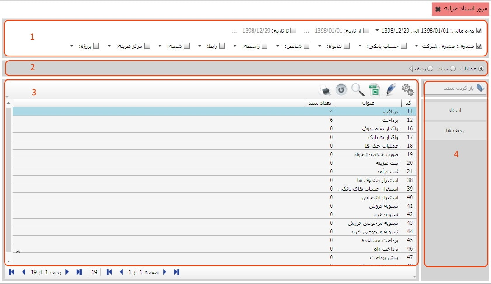
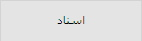
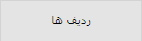

تمامی اسناد خزانه به تفکیک عملیات در این بخش در دسترس هستند، شما می توانید با اعمال فیلترهایی نظیر صندوق، حساب بانکی، تنخواه، شخص و ... تنها عملیاتی را مشاهده کنید که به آنها نیازمند هستید، از منوی مرور و گزارشات گزینه «مرور اسناد خزانه» را انتخاب کنید تا صفحه مربوط به آن نمایان شود:
کادر شماره 1: در این کادر شما می توانید عملیات و اسناد خزانه را بر اساس دوره مالی و یا بازه زمانی دلخواه تان فیلتر کنید. فیلتر صندوق به شما این امکان را می دهد که عملیات و اسناد خزانه ای که محل عملیات آن ها صندوق انتخابی شما می باشد را بتوانید مشاهده کنید. فیلتر حساب بانکی برای نمایش اسناد خزانه ای که محل عملیات شان حساب بانکی مورد نظر می باشد کاربرد دارد و فیلتر تنخواه برای نمایش اسناد و عملیاتی است که محل عملیات آن ها تنخواه دار انتخاب شده می باشد به کار می رود. فیلتر شخص عملیات و اسناد را بر اساس نام شخص سند فیلتر می کند. سایر فیلتر ها از جمله شعبه، مرکز هزینه و پروژه نیز اسناد را بر اساس شعبه، مرکز هزینه و نام پروژه عملیات تفکیک می کند.
کادر شماره 2:
در این کادر سه گزینه وجود دارد که در زیر به شرح هر یک می پردازیم :
عملیات: با انتخاب این گزینه
می توانید کلیه عملیات های تعریف شده در سیستم خزانه داری را
به همراه تعداد اسناد مربوط به هر عملیات مشاهده نمایید.
سند: این گزینه این امکان را به شما می دهد که کلیه اسناد ثبت شده
در سیستم خزانه داری را به صورت یکجا مشاهده کنید.
ردیف: این گزینه کلیه ردیف ها از کلیه
اسناد ثبت شده در سیستم خزانه داری را نمایش می دهد
کادر شماره 3:
پس از باز کردن صفحه مرور اسناد خزانه در این کادر لیست عملیات
خزانه در دوره مالی پیش فرض نرم افزار نمایش داده می شود و شما
می توانید عملیات مربوطه را طبق آنچه گفته شد فیلتر کنید و عنوان
عملیات های تعریف شده در سیستم خزانه داری و تعداد اسناد هر یک از
عملیات ها را در این کادر مشاهده نمایید. در لیست عملیات خزانه،
با دابل کلیک بر روی هر یک از عملیات می توانید لیست اسناد
مربوط به عملیات انتخاب شده را مشاهده کنید، و اگر روی اسناد خزانه دابل کلیک کنید می توانید سند
ردیف های مربوط به آن را مشاهده نمایید.
کادر شماره 4:
در این کادر سه کلید وجود دارد که در زیر هر یک را شرح می دهیم :
پس از انتخاب یک عملیات از کادر شماره ی سه اگر بر روی این کلید کلیک کنید می توانید سند خزانه ی آن عملیات را مشاهده کنید.
اگر یک عملیات را از کادر شماره ی سه انتخاب کنید سپس بر روی این کلید کلیک کنید همه ی اسناد مربوط به عملیات انتخاب شده به نمایش در می آید.
اگر یک عملیات را از کادر شماره ی سه انتخاب کنید سپس بر روی این کلید کلیک کنید همه ی ردیف های مربوط به عملیات انتخاب شده به نمایش در می آید.